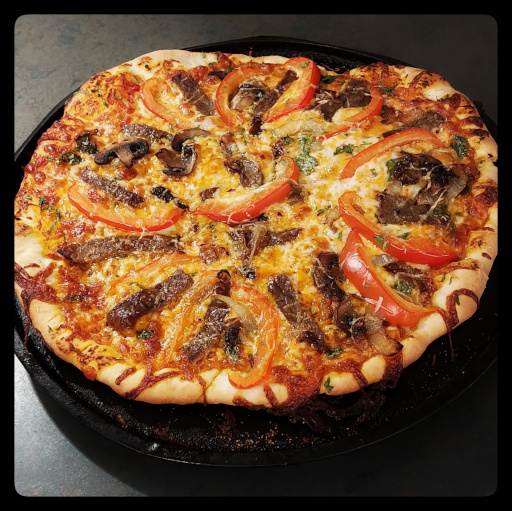

Fajita Pizza
Loco gusto.

pizza dough
tomato sauce
steak or chicken
cheddar cheese
onion
bell pepper
cilantro
cumin
paprika
garlic
chili flakes
Prepare pizza dough
as described here
.
Preheat oven to 450°F.
Slice onions and saute on medium-low heat to caramelize.
Fry thin slices of steak or chicken, flavouring with cumin and paprika.
Slice peppers, finely chop garlic and cilantro.
Spread dough on a baking tray.
Layer dough, sauce, cheese, toppings.
Bake for 10-12 minutes.